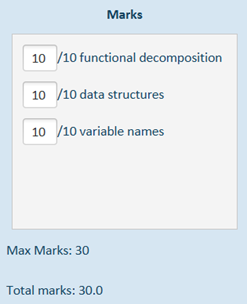

|
Inspector |
A Rapid-Fire Programming Assignment Grading Application
Contents
To create an account from the login screen, enter a username, email address and password and click “Register”.
To login, enter the email address and password you registered with and click “Login”.
On your first login Inspector will warn you that the import directory has not been set. The import directory is the directory where all the assignments you wish to grade are stored.
It is important that the structure of the import directory be as follows:
1 Assignments [root import directory]
1 CS4023 [module code]
1 lab01 [assignment name]
1 0347345 [student ID]
3 copyFile.c [source code file]
3 readFile.c
You can set the import directory by clicking “File” and then “set import directory…”. You can also use the keyboard shortcuts Alt, F and I or simply Alt + I.
Once the import directory is set you will be able to see all of your imported assignment submissions in the Assignments section. They are arranged in a tree structure and you can expand each tree node by clicking on the arrow icon next to its name. You can also use the up and down arrow keys to move between items and the left and right arrow keys to collapse and expand tree nodes.
Select a source code file with the mouse or an arrow key to display its contents in the display pane.
To scroll through source code in the display pane you can:
· use the scrollbar on the left,
· mouse-over the display pane and scroll with the mouse wheel, or
· click the display pane once and use the up/down arrow keys or the page-up/page-down keys.
To create the grading rubric you want to use, start by adding the number of criteria you will be grading the assignment on. Click the “Add” button or press Ctrl + A to add criteria. To remove a criterion click the “X” button beside it or tab to the button and press Enter.
Fill in the marks and names for the criteria and click or tab to “Set Rubric” to save the rubric.
If the next assignment you view does not have saved rubric associated with it then your most recently used rubric will be displayed in the Grading Rubric section so will have the option to reuse this rubric or amend it to you requirements.
Setting the grading rubric will automatically create fields in the Marks section where you enter your marks for an assignment based on each of the criteria you have specified. Max marks will be calculated based on the sum of the marks available for each criterion. Total marks will be calculated dynamically as you input marks for each of the criteria.
|
 |
You may add feedback for the student on individual assignments in the Feedback section. It is important to note that if you are using keyboard navigation then you will need to press Ctrl and Tab to navigate from the feedback section to the “Save” button below as pressing Tab alone while inside a text area will produce a tab space.
Clicking on pressing Enter on the “Save” button will save the rubric, marks and comments to the Inspector database. If you navigate back to the save assignment later on, the saved information will be retrieved from the database and you can make changes, if desired, and then re-save.
Saved results for assignment submissions can be exported as CSV files. However, before they are exported the results export directory needs to be set. This can be done:
· from the File menu,
· by clicking the “Set Export Directory” button, or
· by pressing Ctrl and X.
To export assignment grades to a CSV file, enter the module code and assignment name and click the “Export” button or press Ctrl and E.
The CSV file will be saved to your results export directory with the date, time, module code and assignment name in the file name so that each one is unique.
The CSV file contains the module code, assignment name, student ID, email address and marks and feedback.
Possible uses for this include data analysis and building a mail merge to distribute the results.
General Navigation
|
|
|
Navigation between sections and input fields
|
Tab |
|
Navigating out of feedback text area
|
Ctrl + Tab |
Menus
|
|
|
File menu |
Alt + F |
|
Set import directory |
Alt + I |
|
Set results export directory |
Alt + R |
|
Close |
Alt + C |
|
Help menu |
Alt + H |
|
User manual |
Alt + U |
|
About |
Alt + H + A |
|
|
|
Viewing Assignments
|
|
|
Navigate Assignment Tree |
Up/Down arrows |
|
Expand assignment/tree node |
Right arrow |
|
Collapse assignment/tree node |
Left arrow |
|
Scroll source code display pane |
Up/down arrows page-up/page-down |
|
|
|
Grading
|
|
|
Add criterion to grading rubric |
Ctrl + A |
|
Set grading rubric |
Ctrl + R |
|
Save grade |
Ctrl + S |
|
|
|
Exporting
|
|
|
Export |
Ctrl + E |